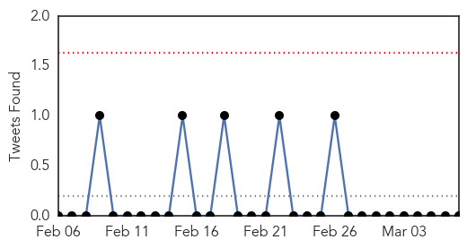
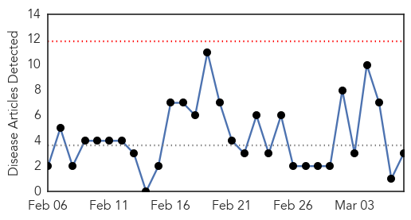
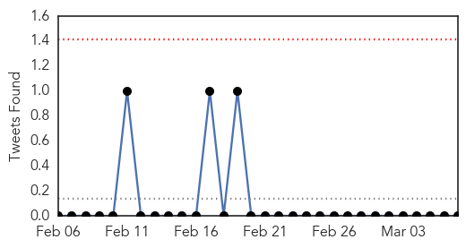
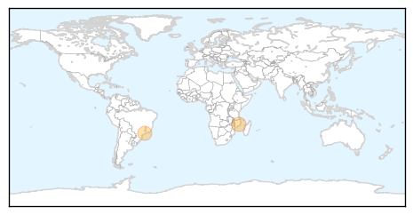

Influenza
30-Day Web Trend
0 alerts, 0 warnings
30-Day Twitter Trend
0 alerts, 0 warnings

Article Locations

Article Confidences

Top Articles:
- 1.000
- Why swine flu has country holding breath
- 0.997
- Across the USA, flu season winding down
- 0.834
- Deadly bird flu strain makes first strike at a poultry farm in Mississippi Flyway
- 0.751
- March 6, 2015 Archives
- 0.751
- March 6, 2015 Archives
- 0.751
- March 6, 2015 Archives
- 0.725
- BIRD FLU: 40 countries ban Minnesota turkeys - Story
- 0.596
- UPDATE: 14-year-old missing girl located
Top Tweets:
-
No tweets found for Mar 07, 2015
Dengue Fever
30-Day Web Trend
0 alerts, 0 warnings

30-Day Twitter Trend
0 alerts, 0 warnings

Article Locations
Article Confidences

Top Articles:
Top Tweets:
-
No tweets found for Mar 07, 2015